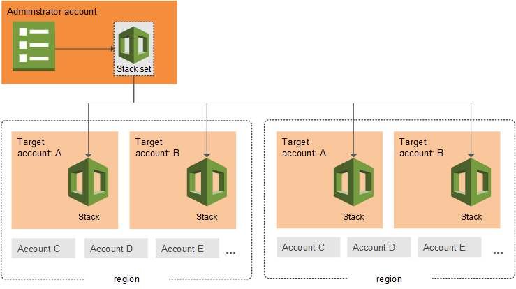

使用 AWS CloudFormation StackSets
AWS CloudFormation StackSets 通过让您在单个操作中跨多个账户和 AWS 区域 创建、更新或删除堆栈来扩展堆栈的功能。通过使用管理员账户，您可定义和管理 AWS CloudFormation 模板，以及将模板用作在指定 AWS 区域 的所选目标账户中预置堆栈的基础。

有关 StackSets 区域支持的信息，请参阅 StackSets 区域支持。
此部分将帮助您开始使用 StackSets，并解答有关如何使用堆栈集创建、更新和删除操作并对其进行故障排除的常见问题。
主题